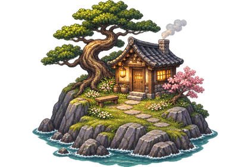
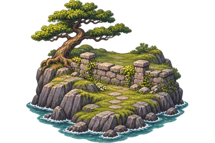

섬과 다리
내 보드 보기
각자의 섬을
만들어주세요
오늘 돌아보게 된 나의 생각이나, 우리 사이를 멀게 하는 장벽 하나를 적어 주세요. 이름은 남지 않아요.
어떤 섬인가요?

돌아보게 된 생각

우리 주변의 장벽
섬 이름
이 섬에는 어떤 넘기 어려운 무언가가 있나요?
바다를 건널 캐릭터
섬 만들기
먼저 연결된 섬 예시 보기
섬 만들기
기록 확인하기
기록 내려받기
전체 리셋
내 이야기
바다로 돌아가기
확인
취소